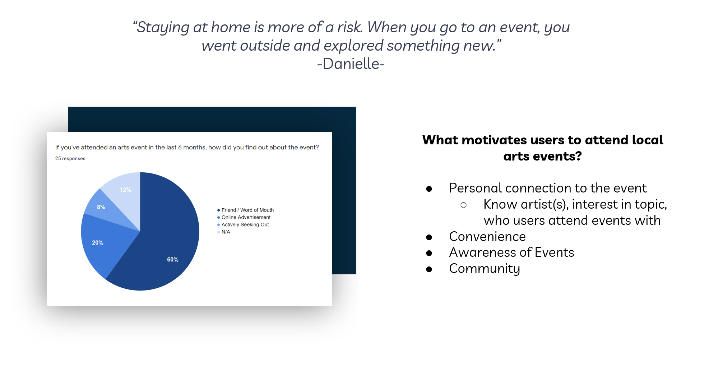
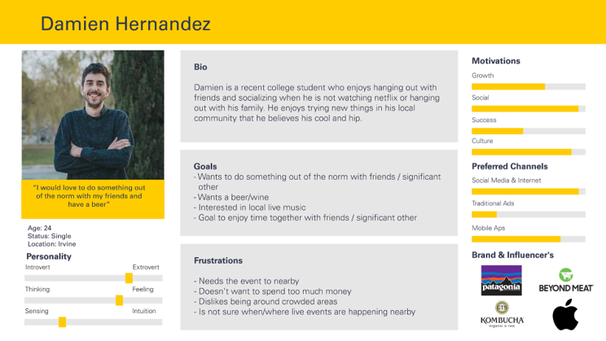
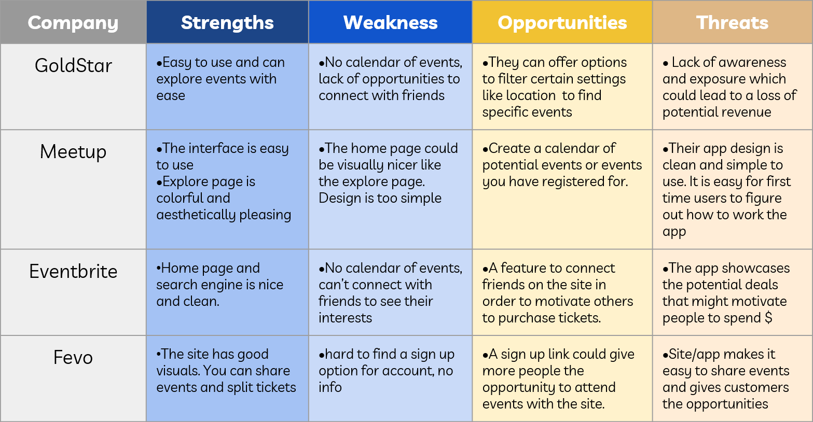
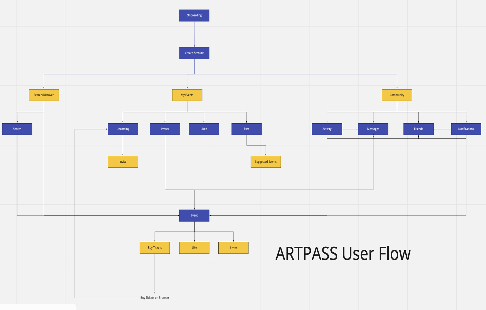
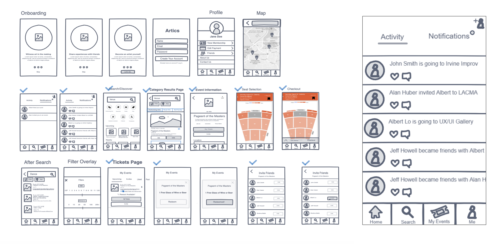
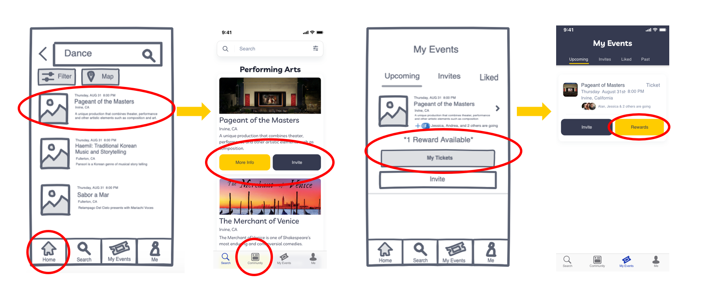
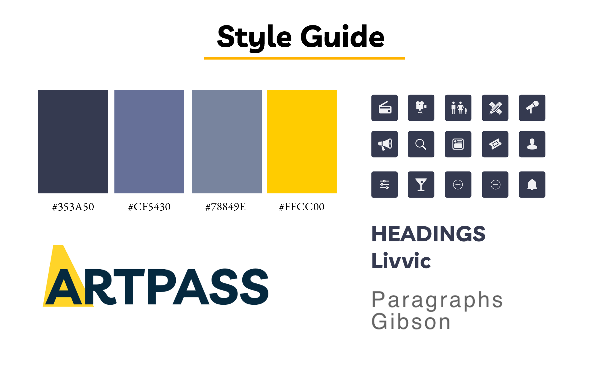

Project Context
When we consider the entertainment that people consume the most, we think of streaming on Netflix or Hulu, popular movies like those of the Avengers and Star Wars franchise, or music festivals and concerts. However, with these forms of entertainment taking priority of people's time and money, many local arts events are left in the dark. Performing art shows, galleries, small music festivals, and even art classes involving painting or sculpting are usually attended by enthusiasts, while the general public may be unaware or uninterested in these events.
This project aims to support the local arts and to attract more people to attend local art events.

Entertainment nowadays is limited to online streaming, movie theaters, concerts, and festivals.
User Research
To discover what factors motivate or prevent people from attending local art evets, we conducted user interviews and surveys. According to over half of the responses, participants primarily find out about events through friends or word of mouth, with online advertisements as the secondary source. In terms of motivation, a personal connection to the event was important to participants, whether it involves knowing the artists or general interest in the genre or topic. Convenience, general awareness of the events, and community involvement were also factors participants found important when deciding to attend art events. Without these motivations, users would generally not attend events, citing money and time as additional factors that prevent them from doing so.

The overall takeaways from our interviews and survey responses were that people tend not to go out of their way for art events, but enjoy unique expereinces with friends. Up-to-date information and incentives would
User Persona
Based on our research, we defined our potential target users to be social and generally interested in the arts and created the following user persona to help orient the remainder of our design process. An expected user of our app would be Damien, who is an extroverted person that enjoys socializing with friends and learning about culture and an artistic genre like music. Damien's ultimate goal would be to do something out of the ordinary to spend time with friends somewhere nearby and without spending too much money. Determining and understanding Damien's goals based on responses from interviews and surveys helped when brainstorming what types of features we wanted to include in our product.

Competitor Analysis

To help with ideation, we wanted to analyze potential competitors in the market involved with art events, particularly GoldStar, Meetup, Eventbrite, and Fevo, and created the SWOT analysis table shown above. These competitors mostly handled the ticketing side of the events and showed that a visually appealing interface with a simple user flow for reserving tickets or spots in an event was crucial. Being able to filter and view events via a calendar, by location, or through other settings was an important feature that made browsing through events less confusing. Sites like Eventbrite and Fevo featured ways to connect friends to the site or share events in order to motivate others to purchase tickets. Additionally, showing deals or other event incentives as done by Eventbrite can provide further motivation to purchase tickets and share events.
Ideation
Because the social aspect of attending these events was a primary motivation according to our research, we wanted our product to act as a sort of database of events with social media features to deviate it from existing platforms. We decided to have three main functions in the app, as seen in the user flow below: searching for events, managing your events, and socializing.

The community section would involve seeing your friends' activities, messaging others, and iniviting or accepting invites from friends. Since events would primarily be from a large variety of smaller venues and managing tickets from every venue would be impractical, purchases would be handled in a pop-up browser rather than in the app. Additionally, any incentives in the form of discounts or free food and drinks would be shown in the app to further motivate users.
Prototyping and Testing
Based on the results of our user research and the features we had decided upon, we synthesized the low-fidelity wireframes shown below. The sketches consist of an onboarding process, an activity feed based home page, an event search page with filters, a bookmarked events page, and user flows for purchasing tickets and inviting friends.

To test how intuitive the user flows were, we conducted user testing with set tasks such as searching for an event, inviting friends to an activity, and redeeming rewards for a purchased event. The overall separation of the event search and activity feed was intuitive, but users expressed confusion while navigating at specific steps. On first impression, the purpose of the Home tab was not clear, so the tab was changed accordingly to Community. The call to action was unclear for event cards when searching, so buttons were added to provide straightforward options when interacting with events and to be consistent with how events were shown in the My Events tab. The call to action for accessing rewards of purchased events was also unclear to users, and the text link was changed to a separate button to accommodate for that.

When converting our low-fidelity wireframes to the final high-fidelity prototype, we created and followed the style guide shown below to ensure consistency throughout the pages in the app. The fonts in addition to the navy blue and yellow accents were chosen to provoke an elegant yet playful feeling when using the app, matching an artistic vibe.

Final Prototypes
After testing and settling on a final style, we reiterated on our wireframes to create the final mobile prototype shown below. Click or tap on the ArtPass app to begin.
Use your mouse and scrollwheel to interact with the mockup!
Additionally, we coded from scratch a desktop prototype to work in tandem with the mobile prototype, making use of the Bootstrap library for various features and ensuring the use of the same style guide and assets for a consistent look.
Visit ArtPass Website